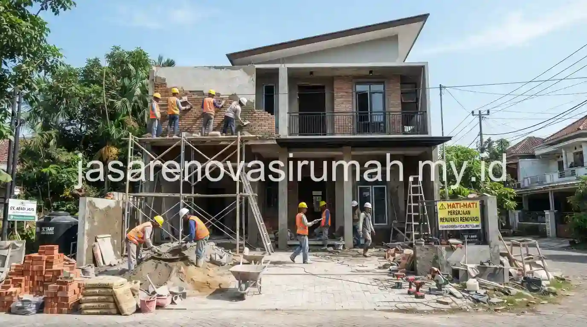
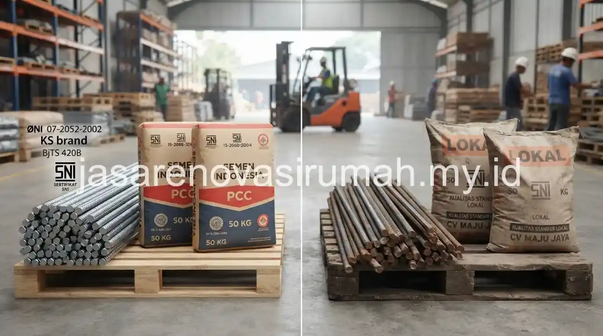

Biaya renovasi rumah di Surabaya per meter persegi secara umum berkisar antara Rp 2,5 juta hingga Rp 4 juta untuk sistem borongan jasa saja, dan bisa mencapai Rp 5-7 juta per m2 untuk borongan total yang sudah mencakup material sesuai standar SNI. Perbedaan signifikan ini dipengaruhi oleh apakah pemilik rumah menyediakan material sendiri atau menyerahkan seluruhnya kepada kontraktor, serta apakah material yang dipilih mengacu pada spesifikasi standar SNI atau material lokal dengan harga lebih terjangkau.
Berapa Kisaran Harga Borongan Renovasi Rumah per M2 di Surabaya?
Kisaran harga borongan renovasi di Surabaya dibedakan menjadi dua sistem utama, yaitu borongan jasa saja dan borongan total yang sudah termasuk material.
Berikut gambaran perbandingan kisaran harga kedua sistem borongan tersebut:
| Sistem Borongan | Cakupan | Estimasi Biaya per M2 (Rp) |
|---|---|---|
| Borongan jasa saja | Hanya upah tukang, material disediakan pemilik rumah | 2.500.000 - 4.000.000 |
| Borongan total (material lokal) | Material dan jasa, spesifikasi standar menengah | 4.000.000 - 5.500.000 |
| Borongan total (standar SNI) | Material bersertifikasi SNI, jasa lengkap, kualitas terjamin | 5.500.000 - 7.000.000+ |
Kisaran ini bersifat umum dan dapat bervariasi tergantung tingkat kerusakan bangunan lama, kompleksitas pekerjaan bongkar, serta lokasi spesifik proyek di kawasan Surabaya.

Apa Perbedaan Material Lokal dan Material Standar SNI dalam Renovasi?
Material lokal umumnya belum memiliki sertifikasi standar nasional namun harganya lebih terjangkau, sementara material standar SNI telah melalui uji kualitas dan keamanan yang lebih terjamin, terutama untuk komponen struktural seperti besi beton dan semen.
Perbedaan ini menjadi penting terutama untuk komponen yang berkaitan dengan kekuatan struktur, seperti pekerjaan penambahan lantai atau perkuatan kolom, di mana penggunaan material standar SNI lebih disarankan demi keamanan jangka panjang. Untuk komponen non-struktural seperti keramik atau cat, penggunaan material lokal masih cukup aman selama kualitasnya sesuai kebutuhan dan tidak digunakan pada area yang menanggung beban struktural.
Mana yang Lebih Hemat, Borongan Total atau Borongan Jasa Saja?
Borongan jasa saja secara nominal terlihat lebih murah, namun pemilik rumah perlu meluangkan waktu dan tenaga untuk membeli serta mengawasi kualitas material sendiri, yang berpotensi menambah biaya tersembunyi jika kurang teliti.
Borongan total lebih praktis karena kontraktor yang mengelola pengadaan material sekaligus jasa pengerjaan, sehingga risiko kekurangan atau kesalahan spesifikasi material bisa diminimalkan. Namun, sistem ini membutuhkan kepercayaan lebih terhadap kontraktor terkait kualitas material yang benar-benar digunakan sesuai kesepakatan di RAB. Pemilihan sistem borongan sebaiknya disesuaikan dengan ketersediaan waktu pemilik rumah untuk mengawasi proyek dan tingkat kepercayaan terhadap kontraktor yang dipilih.
Sebagai perbandingan, gambaran umum mengenai komponen biaya renovasi secara nasional juga bisa dipelajari pada panduan estimasi biaya renovasi rumah, meski angka spesifik tetap perlu disesuaikan dengan kondisi harga material dan upah tukang di kawasan Surabaya.
Bagaimana Menentukan Pilihan Sistem Borongan yang Tepat untuk Renovasi Anda?
Penentuan sistem borongan yang tepat sebaiknya mempertimbangkan skala renovasi, ketersediaan waktu untuk mengawasi proyek, serta tingkat kepercayaan terhadap kontraktor yang akan mengerjakan.
Untuk renovasi skala kecil seperti perbaikan sebagian, borongan jasa saja masih cukup memungkinkan karena pemilik rumah bisa lebih mudah mengontrol kualitas material dalam jumlah terbatas. Namun untuk renovasi skala besar seperti penambahan lantai atau renovasi total, borongan total dengan material standar SNI lebih disarankan demi memastikan kualitas dan keamanan struktur secara keseluruhan.
Pada akhirnya, memilih sistem borongan yang tepat membutuhkan pertimbangan menyeluruh antara anggaran, waktu, dan tingkat kepercayaan terhadap kontraktor. Untuk mendapatkan simulasi RAB yang lebih akurat sesuai kondisi rumah Anda di Surabaya, konsultasikan kebutuhan renovasi Anda dengan tim jasa kontraktor renovasi Surabaya kami yang dapat memberikan rekomendasi sistem borongan sesuai skala dan anggaran proyek Anda.
FAQ Seputar Biaya Renovasi Rumah

Ainur Reza
Penulis Profesional & Praktisi Konstruksi
Ainur Reza adalah seorang penulis profesional yang memiliki ketertarikan mendalam pada dunia arsitektur dan konstruksi. Dengan pengalaman bertahun-tahun mengamati tren renovasi rumah, ia aktif membagikan panduan praktis, tips RAB, dan wawasan seputar material bangunan untuk membantu pemilik rumah mewujudkan hunian impian mereka dengan anggaran yang efisien.